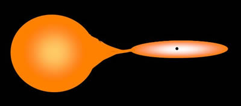

An X-ray binary system in which the companion star has a mass similar to or less than the Sun, and spectral type A or later, is known as a low-mass X-ray binary (LMXB).

Mass transfer between the companion and neutron star or black hole is via Roche-lobe overflow, with the material initially pulled into an accretion disk around the compact object through conservation of angular momentum. As it slowly spirals into the enormous gravitational well of the neutron star or black hole, the material is heated to millions of Kelvin causing the system to shine brightly in X-rays.
Since the companion star in a low-mass X-ray binary is a relatively dim late-type star, these systems tend to be optically faint, with less than 1% of the radiation visual wavelengths spectrum. The majority of the radiation is emitted in X-rays, making them one of the brightest X-ray sources in the sky.
LMXBs are typically found in the bulge and disk of the Milky Way, and observations suggest that there may be anywhere between 1,200 and 2,400 black hole LMXBs in our Galaxy.